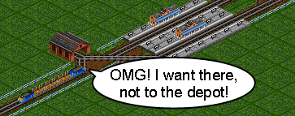
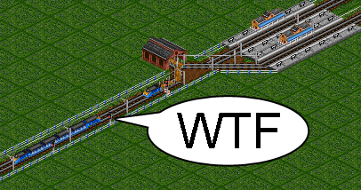
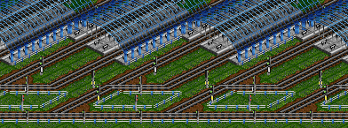
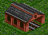
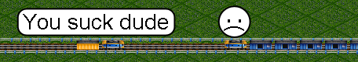
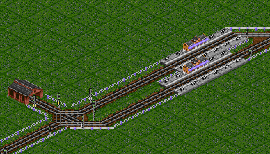
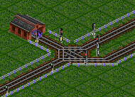
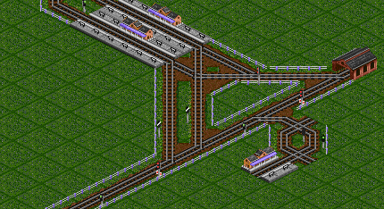
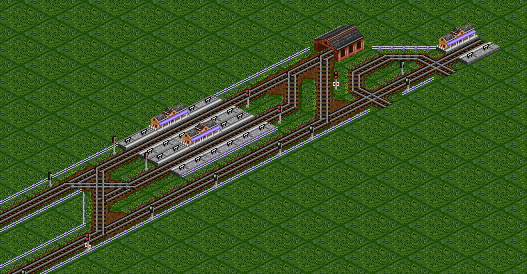

Advanced Building Revue 04: Overflows
In general, we don’t use overflows all that often. In this article I would like to note why to use them, why not to, and of course – I will present some overflows I came up with.

Note:
Most overflows will not work without setting yapf.rail_firstred_twoway_eol = 1
for more info see relevant wiki page.
Use, or not to use, that’s the question.
The first point I would like to start from is the sole purpose, why to use overflow depots. There are two basic reasons/situations, when to use these. More common job of the overflows is to catch off and store trains when production of the served industry drops, rendering some of the trains useless. The other reason why overflows are good, is that you can store any amount of trains there, just waiting to be used when necessary. I found this extremely useful in single player. When? Just imagine you started a game and you have a ML and a bunch of industries connect to it. Now – this is the point where your doing on the map splits into two parts – 1) Fixing and/or expanding the ML and 2) Connecting more primaries and taking care of the old primary pickups. If you overload the overflows with several trains, the station regulates the train count by itself so you can focus on more important tasks, just like fixing a jam on the ML.
Downsides
When coming to downsides of overflows, in this part of article I will note only some general issues, that most of the overflows share. Later on I’m going to specify each type’s pros and cons.
The first thing we really don’t like about overflows is that it fakes the train count, making the stored trains needless. In most cases, we don’t care about money even a bit, but it is also notable that you still pay the running costs even when trains are in depot which tends to make them less profittable.
The second issue occurs when you connect all (or just many) primary pickups with overflow depots and spam trains in there. What’s going to happen? Mostly nothing, unless something goes wrong. When there is any jam on the network, the overflows are going to keep pumping trains out, making it even worse. So overflows are a good thing that can save from waiting-trains-blocking-the-ML-jam, but also on the other hand, overflows can make every single jam much worse than it actually is. This element, of course, is eliminated with proper network that just doesn’t jam.
How does a depot work
The most elementary use of depots is injections – just block signals, trains are allowed to leave the depot if there is no train in the depot block. Another use is with PBS, making the path-reserving-mechanism work even behind the depot. This is often used with forced overflows. Although many people probably don’t know that depots have an entrance signal inside of them. Therefore train is released from the overflow if there is at least one green exit/combo presignal in front of it (or no presignal – case of most of the injection depots and so on). This can be used very nicely with conditional overflows and/or slow forced overflows.
Comparing
When dividing overflows into groups, specifying their values and/or behavior, it’s vital to set some key categories which to compare.
Forced depot

this is the most important overflow value which just separates overflows into two groups. Forced and Conditional. The difference between those is huge, because the Forced type directly influences every train that comes into the pickup station, where Conditional overflow affects only those who are “not needed” at he moment. There is one advantage though: if your trains require servicing, you can put a waypoint in front of the overflow and just give orders “go via waypoint” and then “go to nearest depot (service)”, servicing all trains that come into the station. (use the waypoint when you have multiple depots there) Note: trains are serviced on the day they entered the depot so if there are too many trains waiting, servicing is rendered useless.

Blocking/slowing the incoming line

pretty key thing. Obviously, Forced overflows automatically block/slow the input line, which we can’t say is good. Also the Conditional overflow can block/slow the incoming trains if not prevented by a prio.

Expandable
here it starts to get real interesting. Not really many overflows are as expandable as we would like them to be, making some stations need a rework after they reach a certain throughput requirements of the industry productions. 

Compact

who enjoys building inefficiently huge things? Compactness is always a value to keep an eye on.

Friendliness with low/high TLs
this could seem like a ridiculous parameter, but it is still pretty important for us to know. Just because trains entering the depot slow down a lot, of course affecting more the long trains than their shorter buddies. 

Overflow Gallery
Forced PBS Overflow
Definitely the most common overflow style, used even by many newbie players to either service trains or just store them in the depot.

Forced: yes
Slowing down the input line: no, if there is enough depots
Expandable: quite easy to multiply the depots even up to heavy throughput requirements
Compact: medium
TLs: friendly with basically all lengths, provided you have enough depots to keep the flow
Notes: when you have multiple depots, trains tend to favorize some and ignore the others, unless they have to choose them. (this can be solved by adding flip-flops)
Forced Presignal Overflow
I haven’t ever seen this type built by anyone yet, but it is also a possibility how to do it. The bad thing is that it has a terrible throughput because there isn’t available the possibility of a PBS-duo-depot and trains going through depot slow everything down, especially bad with longer trains.

Forced: yes
Slowing down the input line: yes
Expandable: hardly
Compact: very compact, also almost useless
TLs: longer lengths will suffer heavy slowdowns in the depot
Notes: this design isn’t recommended to be used but it is shown just as an elementary modification of the PBS forced duo-depot style.
Conditional Overflows
as this article is about overflows that should be good, not really much has to be said about forced overflows due to their cons. This whole following section is all about conditional styled depots.
2way combo depot
The first thing I thought of… the problem is that this design is able to fail and block itself. That is the reason why I post it here – to show also how it could break 🙂 How it breaks: when a train leaves the overflow depot and at the ~same time input train comes, the overflow train remains stuck at the 2way combo signal. This problem will probably be unblocked when the next platform gets free.
 
and a situation of fail:


Forced: no
Slowing down the input line: yes
Expandable: hardly
Compact: very compact
TLs: longer lengths will suffer heavy slowdowns in the depot
Note: it is a good idea to add braking space in front of the station to increase speed of the station. I will not mention it later, but it applies to most of the overflows.
EOL? Shelter!
This is the very simpliest design of how to use an overflow. Just change the kind of default loading station by adding 2way exit signals and the depot. The key things: red 2way signals are End Of the Line. Trains would rather go underground than choosing that way. Depot is a path, only suffering high penalties. From these two facts it is obvious that when a train comes, it chooses a green 2way if there is any, because the depot isn’t very popular among trains. When both of the 2ways are red, train seeks shelter in the depot. Note that the trains stay in the depot thanks to the entry signal inside the depot.

Forced: no
Slowing down the input line: yes
Expandable: not very well
Compact: very compact
TLs: longer lengths will suffer heavy slowdowns in the depot
Notes: this is a very simple and compact design, not very good throughput though.
The Heart
The first “little advanced” design of overflow I came up with. This one is special by it’s prio to prevent blocking the input line and also the depot prio towards the input line, making these a kind of fail-prevention, sacrificing some speed. The 2 preventions are: trains don’t exit depot if there is an input train coming (prio) and if a train comes out of the depot, coming input trains give way to it.

Forced: no
Slowing down the input line: mostly no
Expandable: not very well
Compact: still decent
TLs: this is best with TL2, higher lengths will slow down badly.
Notes: probably the simpliest possibility how to make an overflow that does give way to the input line (even though not in all cases). Due to the input-trains-giving-way-to-depot-area, input trains going into the overflow depots give way to themselves, which is a significant slowdown especially with higher train lenghts. (someone might like how it looks :P)
Depot with a waiting bay
This design is an improvement of the Heart. Minor upgrade with much better results. It is based on taking the depot a bit away from the station entry, making trains that require the overflow split away from the station, and connect back via the depot later, if needed, so they do not affect the input line.

Forced: no
Slowing down the input line: no
Expandable: not bad
Compact: medium
TLs: can be scaled even to cope with longer trains, then it is recommended to multiply the depots with a PBS, if trains slow down too much so they need it.
Notes: very effective and not very large design. Input trains can tend to abuse the depot, if the priority (overflown trains giving way to the input ones) is too short (it has to be very long due because the “decision point” is at the 2-way-combo) or in case there is one train coming from the overflow and there are more than one platforms free, the overflow train blocks the entrance, thus blocking the 2-way-combo, making input trains end up in depot too. This can be eliminated by adding 2way exit signals behind the station and connecting the combo-2-way to it. This slows the reaction time but prevents some overflow abuse.
PBS Conditional Overflow
To break the presignal & EOL streak, let’s add some PBS usage. Because we can’t use EOL with PBS in this case (2way block signals would become red if there was even just one train on the platforms), we need to use the PF trap. This type of an overflow tends to work odd, because it relies on track penalties and PBS, therefore expect to need some experimenting and try-fail method while building. Also a big disadvantage is that the overflow trains don’t give way to the input ones.
 
Here goes an interesting version of a combination of both ro-ro and terminus station.


Forced: no
Slowing down the input line: yes
Expandable: not bad
Compact: medium, can have many platforms though
TLs: longer lengths will suffer heavy slowdowns in the depot
Notes: no priority for the input line is quite a downside and also PBS tends to be slow-reacting in some key moments. On the other hand, this can be used with a good throughput because of the PBS splitting trains into platforms pretty well even if they are far and multiple trains come close to each other.
Modification: there can be also added a priority combo signal behind the depot, but due to the slowed train coming from the depot when prio is green, there is a high probability that the train will come late – when the prio is already red.
Passing by 2ways
The most massive and also most powerful design is the conditional overflow station I already wrote about in Advanced Revue 01. So here follows just an image and link to the blog article.

Conclusion
The overflows can be very useful in situations. You just have to use them very carefully and have the network ready for it because they are able to spam your network with spare trains like no tomorrow. From my point of view, it is a “second mate” who plays with you and takes care of the deployed train count, coming in handy when playing alone. You might have a problem with asking your mate how many trains have been deployed though :D.
As you might have noticed, in our games we mostly don’t use overflows, especially not for primary pickup stations. That is reasoned by our numbers (therefore being able to do many more things at once). It is something different with secondary pickup stations, where productions can change by a huge amount and overflows can be useful pretty often.
All in all, as you probably guessed by the length of this article, I find overflows a big bunch of fun to toy with and there are really many possibilities how to make one. From describing each design qualities it is obvious that there is almost no ultimate design and every has a downside. Building an overflow often depends on the situation you’re using it and how do you want it to perform, so feel free to experiment!
Categories: Community News
OG Matautas April 30, 2010 14:52
Nice guide , usefull especialy b4 reset as u might remember 🙂
Bertus May 7, 2010 12:22
Have you ever tried to build an overflow without the depot (so without the stack-all-trains-on-an-impossibly-small-area)?
I haven’t tried it myself. I guess it would look more like an actual train emplacement. Hmmm, I’m going to do some experimenting…
– Bertus
V453000 May 10, 2010 16:16
hi Bertus, that would be basically the same thing as doing a depot, only making there the line to store trains in… possibly with some amazing eyecandy… 🙂 But why to make another lane to store trains … that is the same as if you made more platforms 😛
perk11 May 29, 2010 00:53
Thanks, very usefull!
I’d like to notice that combination of both ro-ro and terminus station works only if line_reverse_mode = 0
V453000 June 11, 2010 19:57
even though quite obvious, a good note I think 🙂 kinda troubleshooting FAQ – go to config 😛 thanks for that note
planetmaker June 21, 2010 17:55
OMG. I should really read blog more often. Was this announced in our channels? 😉 Very nice article on station types / overflows. Something which has not been used extensively on our servers so far. Kudos!
perk11 September 16, 2011 15:02
This guide is no longer valid (except for 2way combo depot), because it works only with pf.yapf.rail_firstred_twoway_eol set to 1 which is not default anymore. 🙁 That’s sad
V453000 September 17, 2011 13:32
What keeps you from changing settings to something not-default? 🙂
Advanced Building Revue 12: Overflows III at #openttdcoop August 1, 2012 20:22
[…] especially roles of each component in overflow stations. Therefore I strongly recommend to read ABR04: Overflows and ABR08: Overflows II before reading this one. I also did not mark the images with colours etc as […]